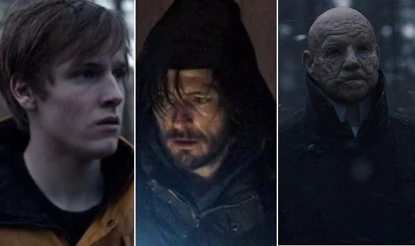
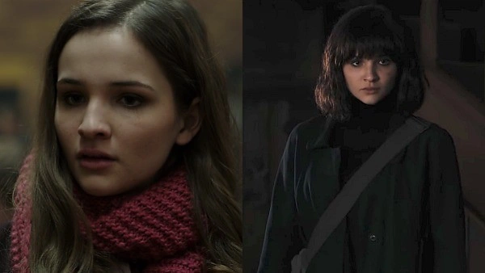
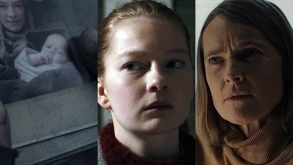
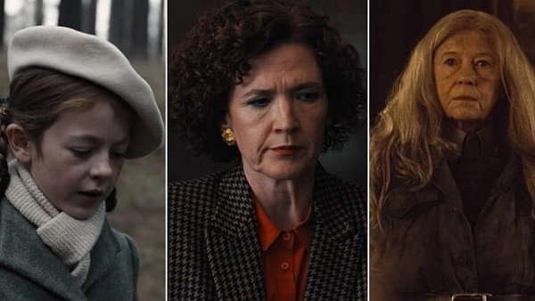
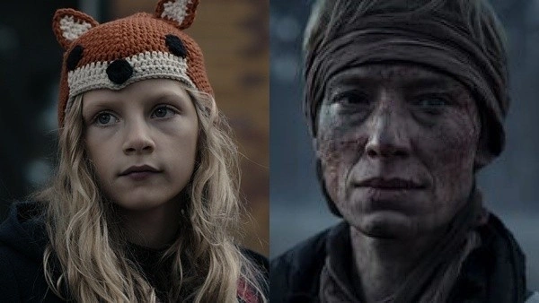
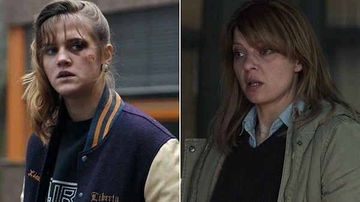
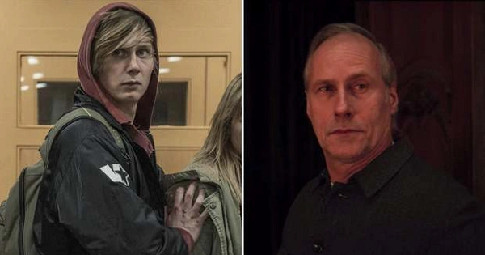
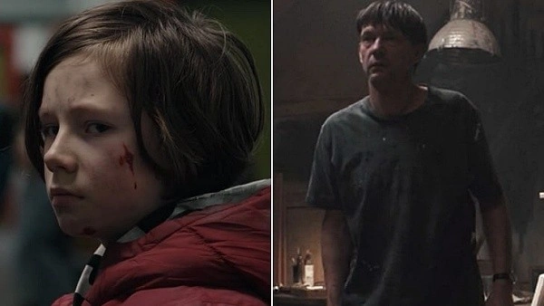

Dark (estilizado como D A R K ou D A Я K) é uma premiada websérie alemã de drama, suspense e ficção científica, criada por Baran bo Odar e Jantje Friese e eleita em votação popular no site Rotten Tomatoes como a melhor série original Netflix. A série se passa na cidade fictícia de Winden, na Alemanha, que sofre o impacto do desaparecimento de uma criança, que expõe os segredos e as conexões ocultas entre quatro famílias locais, enquanto elas lentamente desvendam uma sinistra conspiração de viagem no tempo que abrange várias gerações. Ao longo da série, Dark explora as implicações existenciais do tempo e seus efeitos sobre a natureza humana.
É a primeira série original alemã da Netflix, tendo estreado sua primeira temporada completa no dia 1º de dezembro de 2017. Após as críticas positivas, a série foi renovada para uma segunda temporada que foi lançada no dia 21 de junho de 2019. No trailer de lançamento da segunda temporada, a série foi anunciada como "uma história contada em três 'ciclos'" - cujo final ocorreu na sua terceira e última temporada, que foi lançada no dia 27 de junho de 2020.
Apesar de ser inicialmente comparada a Stranger Things - ambas partem do desaparecimento de uma criança - a série ganhou fama pela sua trama complexa e temas envolvendo viagens no tempo e conceitos de física. No âmbito de uma votação realizada pelo site Rotten Tomatoes, Dark foi eleita como a melhor série da Netflix, vencendo a própria Stranger Things e enfrentando a também aclamada Black Mirror na final. Dark também ganhou o prémio Grimme-Preis, o mais importante da televisão alemã.
Visão Geral
O desaparecimento recente de crianças na pequena cidade alemã de Winden remete a acontecimentos idênticos ocorridos há 33 anos e 66 anos e coloca quatro famílias no centro de uma teia de mistérios envolvendo uma misteriosa caverna, uma usina nuclear suspeita e um estranho homem recém-chegado na cidade.
Na primeira temporada, seguimos Jonas Kahnwald, um adolescente lutando para lidar com o suicídio de seu pai e descobrindo a cadeia de acontecimentos; o policial Ulrich Nielsen, cujo filho é um dos desaparecidos e cujo irmão desapareceu 33 anos antes; e a chefe de polícia Charlotte Doppler, que está investigando os desaparecimentos. Outros personagens guardam suas próprias tramas e mistérios, que acabam se entrelaçando a trama central.
A história começa em 2019, mas se espalha para incluir histórias em 1986 e 1953 através de viagens no tempo, à medida que certos personagens das principais famílias da cidade se conscientizam da existência de um buraco de minhoca que permite as viagens no sistema de cavernas abaixo da usina nuclear local, que é administrada pela influente família Tiedemann. Durante a temporada, segredos começam a ser revelados sobre as famílias Kahnwald, Nielsen, Doppler e Tiedemann, e suas vidas começam a desmoronar à medida que os laços se tornam evidentes entre as crianças desaparecidas e as histórias da cidade e de seus cidadãos.
A segunda temporada continua as tentativas das famílias entrelaçadas de se reunir com seus entes queridos desaparecidos, vários meses após o final da primeira temporada, em 2020, 1987 e 1954, respectivamente. Seguimos Jonas através de novas viagens no tempo, chegando aos anos de 2053 e 1921, que acrescentam novos aspectos aos mistérios, assim como a existência da irmandade secreta Sic Mundus, uma organização secreta que aparentemente estuda e manipula as viagens no tempo, além dos outros personagens que estão se movendo na batalha pelo futuro de Winden, dos personagens, pelo destino próprio ou de seus familiares. Enquanto isso, um evento apocalíptico está prestes a acontecer na cidade em 2020.
A terceira e última temporada segue as quatro famílias ao longo do tempo na esteira do apocalipse em 2020, enquanto também introduz um mundo paralelo cujos eventos estão interconectados com aqueles do primeiro mundo. A temporada se passa principalmente em 1888, 1954, 1987, 2020 e 2053 no primeiro mundo e em 2019 e 2052 no segundo mundo, enquanto os personagens trabalham para encontrar uma saída do ciclo repetitivo de eventos em Winden em ambos os mundos.
Elenco Principal
| Personagens Principais | Ator | Foto |
|---|---|---|
| Jonas Kahnwald |
Louis Hofmann Andreas Pietschmann Dietrich Hollinderbäumer |
 |
| Martha Nielsen |
Nina Kronjäger Barbara Nüsse Moritz Jahn |
 |
| Charlotte Doppler |
Karoline Eichhorn Stephanie Amarell |
 |
| Claudia Tiedemann |
Lisa Kreuzer Julika Jenkins Gwendolyn Göbel |
 |
| Elisabeth Doppler |
Sandra Borgmann Carlotta Von Falkenhayn |
 |
| Katharina Nielsen |
Jördis Triebel Nele Trebs |
 |
| Magnus Nielsen |
Wolfram Koch Moritz Jahn |
 |
|
Mikkel Nielsen Michael Kahnwald |
Sebastian Rudolph Daan Lennard Liebrenz |
 |
Árvore Genealógica

Produção e Lançamento
Em fevereiro de 2016, a Netflix deu sinal verde para a série e encomendou uma primeira temporada composta por 10 episódios de uma hora. As filmagens começaram em 4 de outubro de 2016 nos arredores de Berlim e duraram até o final de março de 2017. A série foi filmada na resolução de 4K (Ultra HD). Sua primeira temporada completa, com dez episódios, foi disponibilizada no dia 1º de dezembro de 2017.
Após as críticas positivas, a série foi renovada no dia 20 de dezembro de 2017 para uma segunda temporada, que iniciou as gravações no dia 25 de junho de 2018 e finalizou em dezembro do mesmo ano, sendo lançada no dia 21 de junho de 2019 - uma data que marca um evento simbólico no universo da série - com mais oito episódios. Assim como a primeira, a segunda temporada também foi bem recebida entre os críticos.
No trailer de lançamento da segunda temporada, lançado em maio de 2019, a série foi anunciada como uma trilogia, uma história contada em três "ciclos". Assim, a trilogia se encerrou na terceira temporada, que foi lançada no dia 27 de junho de 2020 - outra data que marca um grande evento na trama da série.
Mídias
Teaser Oficial Primeira Temporada
Trailer Oficial Segunda Temporada
Trailer Oficial Terceira Temporada